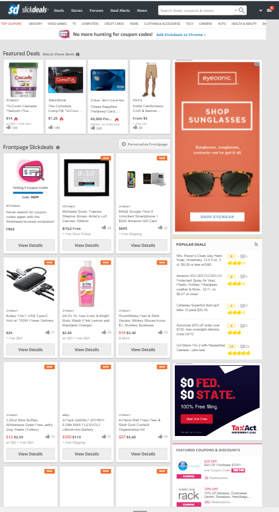

PARC: PROXMITY
Slick Deals
I feel like slickdeals uses the proximity principal very well as It has a good balance to all the spacing that it has. You can easily tell where the beginning and end of each deal is but still has good spacing on the ads. In this way you can tell their meant to be part of the website and a part to be read, but still seperate.
PARC: Alignment
It's a little hard to tell from the home page, but I felt that Reddit did a great job of using alignment because it is easy to read throught he different comments and posts by their vertical posting method.
PARC: Contrast
Amazon
I felt like this had a great example of contrast right here on the front page. Just by looking at it your eyes are drawn to the dark image of the bumblebee ad. This is vastly different from the rest of the page which has white backgrounds so you can better see the items within which are described/advertised